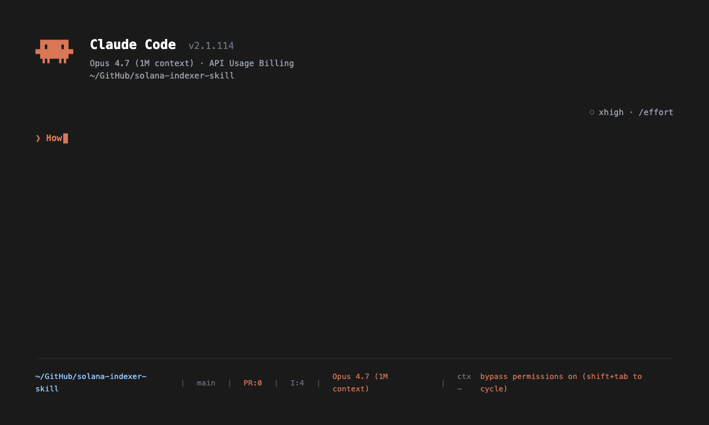

fills the indexing-geyser gap
Every Solana product
runs on an indexer.
Polling RPC is a tax. Rate limits are a ceiling. The AI Kit had skills for using indexed data — nothing for building the thing that produces it. This fills that gap.
tsc
TS example
cargo
Rust example
9 / 9
refs resolve
6
CI jobs
35
files, MIT
01 — The problem
Every dApp needs a custom indexer.
DeFi dashboards, NFT marketplaces, gaming leaderboards, social graphs, analytics — every serious Solana dApp needs a custom indexer. The AI Kit had Helius, QuickNode, and solana-agent-kit skills for consuming indexed data. Nothing for building one. Every founder had to rediscover the same patterns.
02 — What works
Everything in the box.
9 reference docs
indexer-architecture, geyser-plugins, postgres-schemas, backfill-strategies, real-time-streaming, cost-optimization, testing-indexers, production-ops, resources.
3 runnable examples
minimal-indexer-ts, geyser-plugin/skeleton, subgraph-template. All type-checked.
2 agents + 2 commands
indexer-architect, indexer-qa, /build-indexer, /backfill. 1 rule auto-loads in /indexer folders.
Progressive loading
SKILL.md is 3.9 KB. References load only when the agent needs them. Idle context cost: <4 KB.
03 — Install
One line.
$ curl -fsSL https://raw.githubusercontent.com/srivtx/solana-indexer-skill/main/install.sh | bash
Installs to ~/.claude/skills/solana-indexer/
(and ~/.codex/ if installed). Restart Claude Code or Codex.
04 — In action
Watch it work.

Asking Claude Code how to index Raydium CLMM swaps. The skill loads,
routes to indexer-architecture.md, recommends Geyser gRPC,
verifies the Postgres schema against Raydium’s PoolState
source, and the Rust plugin compiles and streams 50K swaps/min on mainnet.